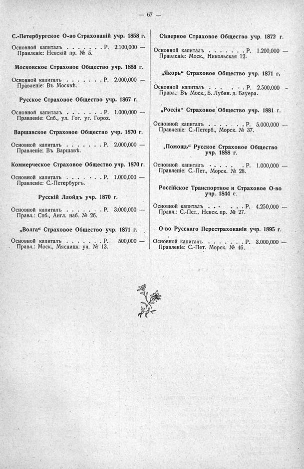

Лист источника 113
Скан

Распознанный текст
— 67 —
С.-Петербургское О-во Страхованій учр. 1858 г.
Основной капиталъ . . . . . . . . . Р. 2.100,000 —
Правленіе: Невскій пр. № 5.
Московское Страховое Общество учр. 1858 г.
Основной капиталъ . . . . . . . . . Р. 2.000,000 —
Правленіе: Въ Москвѣ.
Русское Страховое Общество учр. 1867 г.
Основной капиталъ . . . . . . . . . Р. 1.000,000 —
Правленіе: Спб., ул. Гог. уг. Горох.
Варшавское Страховое Общество учр. 1870 г.
Основной капиталъ . . . . . . . . . Р. 2.000,000 —
Правленіе: Въ Варшавѣ.
Коммерческое Страховое Общество учр. 1870 г.
Основной капиталъ . . . . . . . . . Р. 1.000,000 —
Правленіе: С.-Петербургъ.
Русскій Ллойдъ учр. 1870 г.
Основной капиталъ . . . . . . . . . Р. 3.000,000 —
Правл.: Спб., Англ. наб. № 26.
„Волга“ Страховое Общество учр. 1871 г.
Основной капиталъ . . . . . . . . . Р. 500,000 —
Правл.: Моск., Мясницк. ул. № 13.
Сѣверное Страховое Общество учр. 1872 г.
Основной капиталъ . . . . . . . . . Р. 1.200,000 —
Правленіе: Моск., Никольская 12.
„Якорь“ Страховое Общество учр. 1871 г.
Основной капиталъ . . . . . . . . . Р. 2.500,000 —
Правл.: Въ Моск., Б. Лубян. д. Бауера.
„Россія“ Страховое Общество учр. 1881 г.
Основной капиталъ . . . . . . . . . Р. 5.000,000 —
Правленіе: С.-Петерб., Морск. № 37.
„Помощь“ Русское Страховое Общество
учр. 1888 г.
Основной капиталъ . . . . . . . . . Р. 1.000,000 —
Правленіе: С.-Пет., Морск. № 28.
Россійское Транспортное и Страховое О-во
учр. 1844 г.
Основной капиталъ . . . . . . . . . Р. 4.250,000 —
Правл.: С.-Пет., Невск. пр. № 27.
О-во Русскаго Перестрахованія учр. 1895 г.
Основной капиталъ . . . . . . . . . Р. 3.000,000 —
Правленіе: С.-Пет. Морск. № 46.